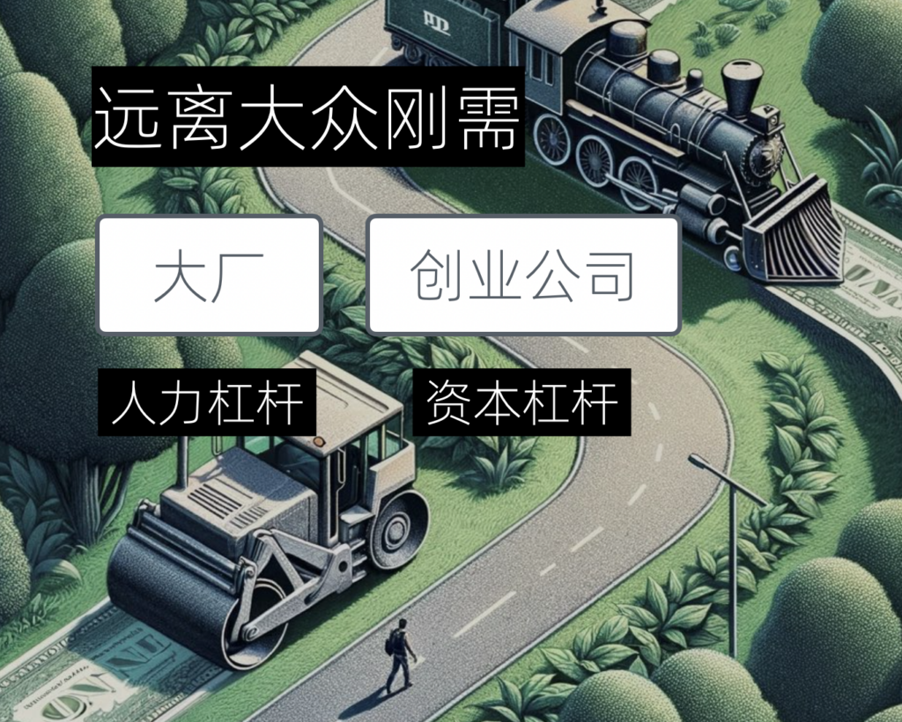
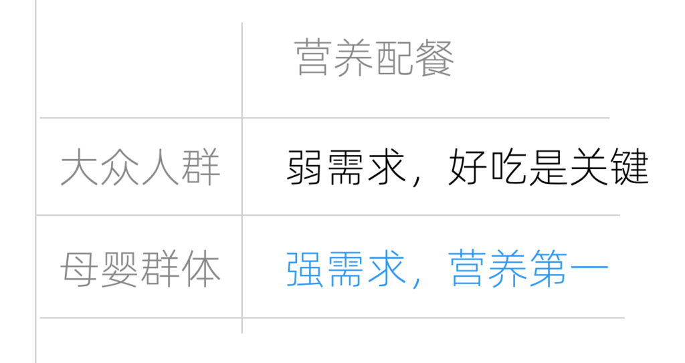
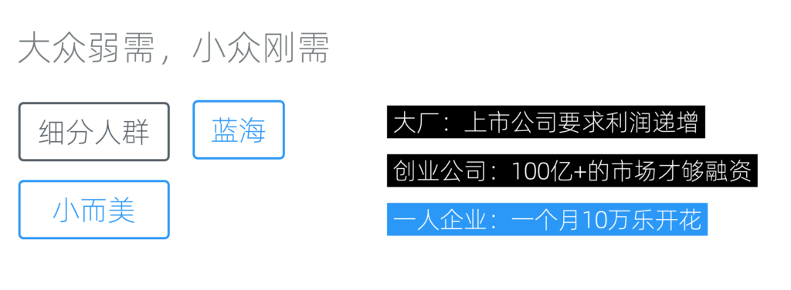

赛道选择:一人企业如何选择赛道
现在我们来讨论「规划一人企业」的第二部分，赛道选择。
远离大众刚需
首先要和大家分享的，是一个有点反常识的观点 ------ 远离大众刚需。这和我们通常接触的方法论有点不同。无论是大公司还是创业公司，在产品规划时都会强调必须满足大众的刚性需求，因为只有这样才能覆盖足够大的市场，从而获得相应的回报。
这种选择对于大公司和创业公司而言，可能是理所当然的，因为大公司具有人力和资本的双重杠杆，而创业公司则依靠资本杠杆。然而，对于一人企业来说，如果按照同样的逻辑去选择赛道，那么毫无疑问会直接与大公司和创业公司撞上，产生直接的竞争，这显然不是我们所希望的。

大众刚需：拥挤又易被碾压的赛道
对一人企业而言，至少在初期，直奔大众刚需并非上策。因为这意味着我们将直接面对那些拥有人力和资本杠杆的强大竞争者。并不是说我们完全无法取胜，但没有必要无谓地增加比赛的难度。
大众的弱需求、小众的强需求
相反，我们可以选择从那些对大众来说是弱需求、但对某些小众人群却是强需求的地方入手。我把这个叫做「小众刚需」。
以营养配餐为例，对于大众来说，这可能是一个弱需求，因为偶尔的营养不足和过剩并不是他们最关心的；大多数人更注重食物的口味。然而，对于母婴群体来说，营养就是他们的第一关注点、是刚性需求，远比口味更重要。

大众的弱需求，可能是小众的强需求
通过这样的策略，我们可以在大众的弱需求中找到一部分实际上是刚需的细分市场，这正是一人企业应该着重关注的。如果你发现这个细分市场依然充满竞争，那么可以进一步细分下去。一人企业的优势就是，即使这个市场非常小，但往往对一人企业来说也足够。

一人企业可以选择更为小众的市场
小众人群的获客和触达
然而，尽管我们可能发现各种小众刚需，是否适合我们却取决于能否以低成本的方式聚集或触达这个细分人群。
因为小众市场的一大问题就是，通用的获客方式性价比极低。比如，同样是花几百万买开屏广告，面向大众的快消类产品，100 万人看，其中有 80 万都是潜在目标用户，最后点击可能是 20 万。但小众产品如果以同样价格去投放，100 万人中很可能只有 10 万人是目标用户，最终的点击和转化就非常低了。
一些小众人群有自己的垂直渠道，比如论坛。但这种渠道的问题在于用户上限很低，往往投放不了几次用户就覆盖完了。很多垂直社区对广告还有天然的排斥情绪。另一方面，小渠道品质的参差不齐，也让投放难度变大。
当然，以上讨论的是还是有市场费用的情况。更普遍的情况是，根本就没有市场预算。这时候我们就需要自己来做小众人群的聚集工作。常见的方式有以下几种：
- 内容营销：通过写文章、发视频，以自媒体方式聚集用户
- SEO：通过特定关键字群，依靠搜索引擎获得用户
- SideProject营销：针对小众人群的特殊需求开发一个专门用于获客和传播的（免费）项目
前两个大家应该很熟悉了，这里不多讲。说下SideProject营销。内容营销因为门槛低、易于复制，对小众市场来讲往往不是稀缺的，但SideProject的门槛就要高一点，同时给用户提供的价值也更为独特，因此更容易获客和传播。继续用上边母婴人群的例子，在通过浏览论坛、用户访谈之后，我们可以做一个有需求但未被满足的SideProject，比如母乳喂养管理APP（随机例子，不一定有需求）来获客。
可以看到，能否以低成本接触和集中细分市场主要取决于个人的资源和能力，而且往往是一个长期的过程。
因此，我们建议尽可能选择自己的「专长领域」。如果你对某个领域充满热情，即使面对收益不高甚至为零的情况也能持续投入，这就是所谓的专长领域。
适合一人企业的赛道
我们统计了Trends.vc的上百份历史报告，总结出以下适合一人企业的赛道/趋势，希望对大家有所启发：
数字产品与服务
- 软件即服务 (SaaS): SaaS模板、AI驱动的SaaS、WordPress插件、Shopify插件、Chrome扩展、面向企业的SaaS、微型SaaS。
- 数字内容创作: YouTube频道、不出镜YouTube频道、短视频、播客、AI图像生成器、AI生成内容。
- 教育与学习: 微教育(比如基于短信)业务、在线课程、基于群组（用户分组）的课程。
营销与增长
- 内容营销: 不出镜社交媒体账户、每日Newsletter、付费Newsletter、SideProject营销。
- 社区与网络: 付费社区、基于Token的社区。
- 增长策略: 增长黑客、分类导航服务、众包、营销漏斗、以产品为导向的增长。
创业与金融模式
- 个体创业: 通过高杠杆技能、个人品牌、微垄断（独立品类）、多元化收入、信任货币化构建百万美元的一人企业。
- 微型企业与投资: 微型私募股权、天使投资。
- 货币化模式: 去中心化自治组织 (DAOs)、非同质化代币 (NFTs)、去中心化金融 (DeFi)。
技术与创新
- 人工智能与机器学习: 细分AI模型、开源AI、AI生成音乐、AI代理、提示词工程、声音克隆。
- 无代码/低代码开发: 无代码、低代码。
- 区块链与数字货币: 流动性挖矿、非同质化代币 (NFTs)、去中心化金融 (DeFi)。
个性化与定制服务
- 专业服务与咨询: 包括代理机构、软件开发服务、咨询、微咨询。
- 定制化产品与服务: 包括无限服务、移动应用、电子书、独立游戏。
注：由于政策限制，数字货币相关业务在中国大陆是被禁止的。